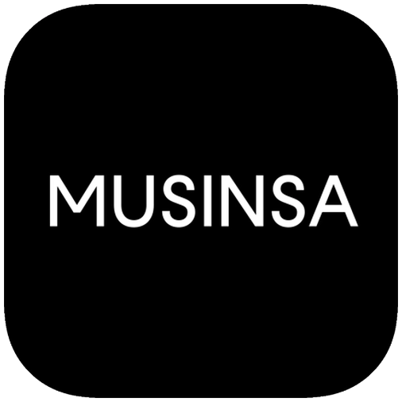
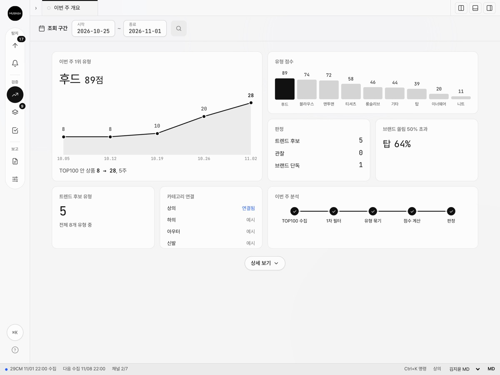
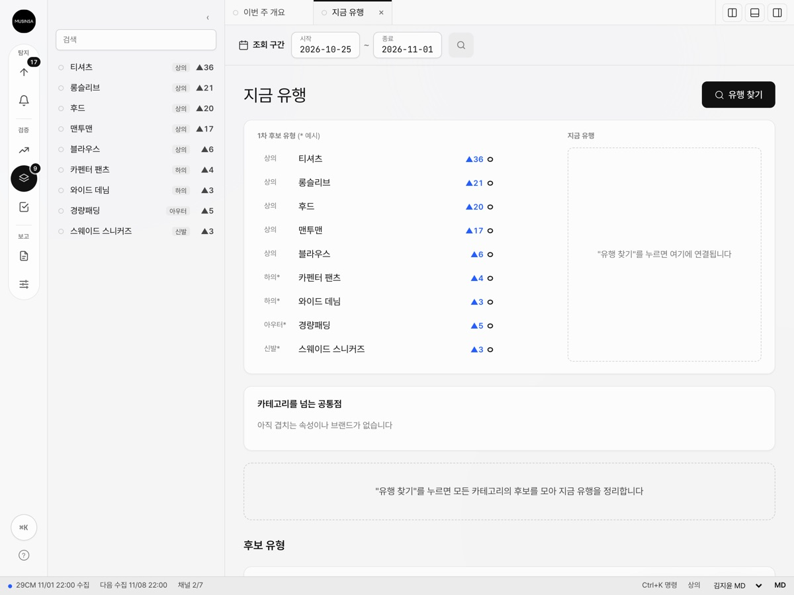
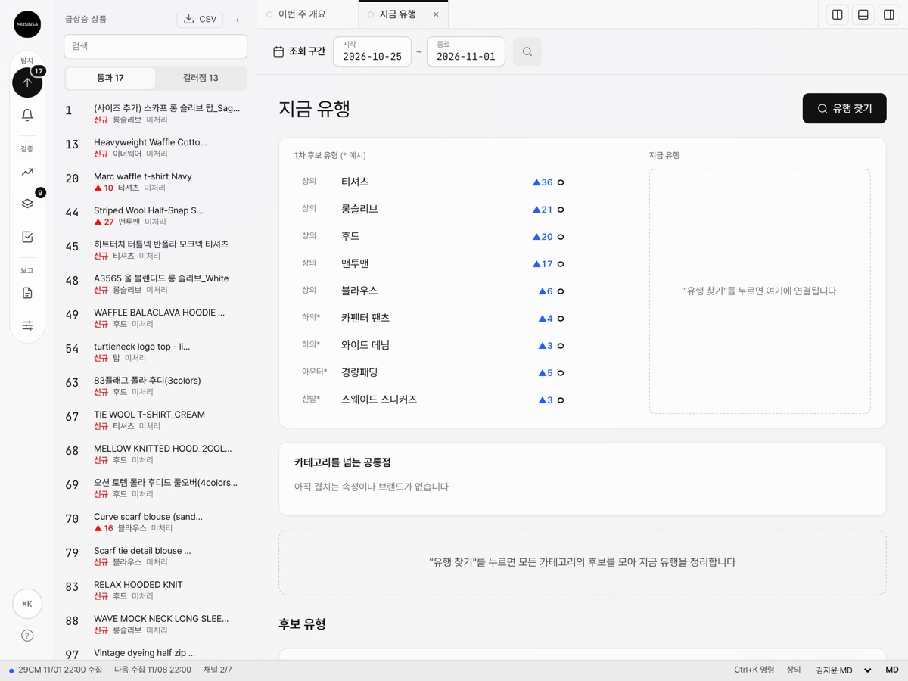
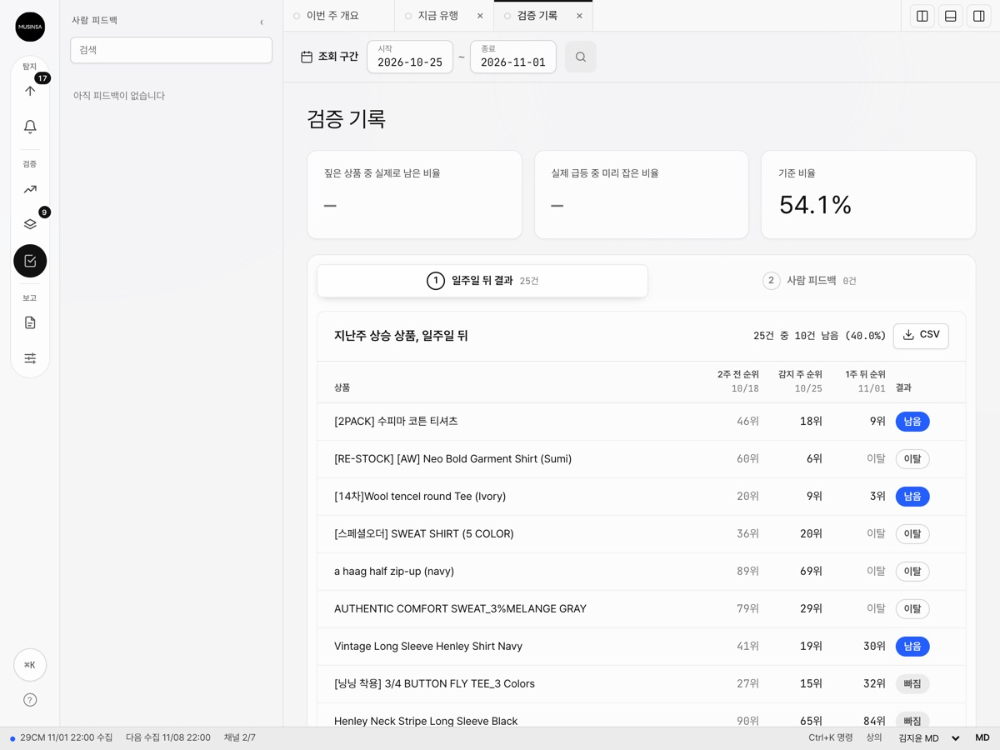
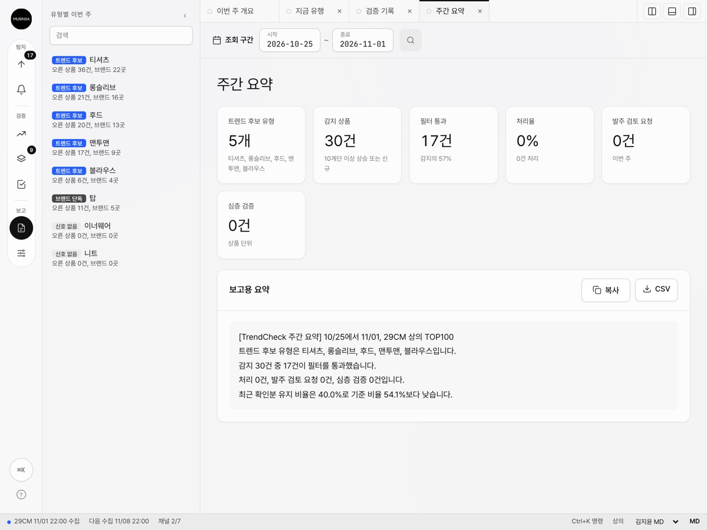

Trend
Monitor
이번 주 신호와 판정 근거를 한 화면에서 봅니다.
Inside Trend Monitor
Private access
Sign in
전달받은 비밀번호를 입력해 주세요.

MUSINSATrendCheck 소개 페이지이번 주 신호와 판정 근거를 한 화면에서 봅니다.
Inside Trend Monitor전달받은 비밀번호를 입력해 주세요.
들어가면 보시게 될 다섯 화면입니다. 이름을 가리키면 실제 화면이 열립니다.




